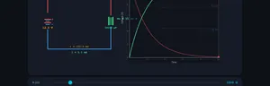
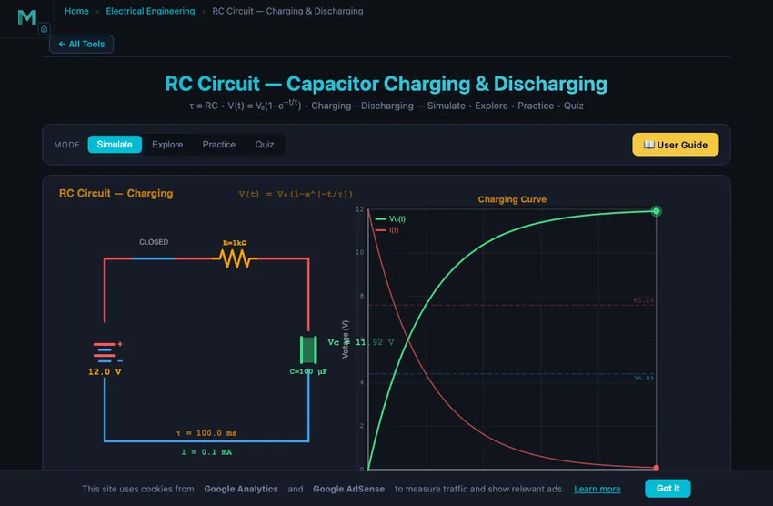
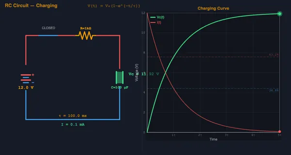

RC Circuit — Capacitor Charging & Discharging
τ = RC • V(t) = V₀(1−e−t/τ) • Charging • Discharging — Simulate • Explore • Practice • Quiz
3D Model — Circuits: RC Circuit Transient Response
Interactive 3D model of this apparatus. Pick a component on the right, then drag to rotate · scroll to zoom · right-drag to pan.
1 Overview
The RC Circuit Simulator lets you explore how a resistor-capacitor circuit behaves during charging and discharging. The core relationship is the time constant τ = RC, which determines how quickly a capacitor charges or discharges through a resistor. During charging, the capacitor voltage follows V(t) = V₀(1 − e−t/τ), reaching 63.2% of the supply voltage after one time constant and 99.3% after five time constants (5τ).
This simulator is built for electrical engineering students, electronics technicians, and physics learners studying transient analysis, exponential decay, cutoff frequency, and RC filter design. You can adjust resistance, capacitance, and supply voltage, then watch the capacitor charge or discharge in real time with animated current flow and a live voltage-time graph.
2 Building the Circuit

The simulator opens in Simulate mode with R = 1000 Ω, C = 100 μF, and Vsupply = 12 V, giving a time constant of τ = 0.1 s. To begin:
- Click Charge or Discharge to select the operating mode, then observe the voltage curve on the canvas.
- Drag the R slider (1–10,000 Ω) and C slider (1–1000 μF) to change the time constant and see the curve stretch or compress.
- Adjust the Vsupply slider (1–24 V) to change the final voltage the capacitor charges toward.
- Use Presets to load common RC combinations: Fast (10 Ω, 100 μF), Standard (1 kΩ, 100 μF), Slow (10 kΩ, 1000 μF), or Filter (1 kΩ, 10 μF).
- Click Reset to restart the animation from t = 0.
Switch between the four modes — Simulate, Explore, Practice, Quiz — using the pill tabs at the top of the page.
3 Energising the Circuit
Simulate mode is the primary interactive workspace. The canvas displays the RC circuit schematic with animated current dots and a real-time voltage-vs-time graph. Key controls include:
- R slider (1–10,000 Ω): Controls resistance. Higher R means a longer time constant and slower charging.
- C slider (1–1000 μF): Controls capacitance. Higher C stores more charge and takes longer to reach full voltage.
- Vsupply slider (1–24 V): Sets the target voltage for charging. During discharge, the capacitor starts at this voltage.
- Charge / Discharge toggle: Switches between charging (voltage rises exponentially) and discharging (voltage decays exponentially as V(t) = V₀·e−t/τ).
The readout cards show: capacitor voltage (VC), time constant (τ), instantaneous current, energy stored (E = ½CV²), and charge percentage. Watch how the current starts at maximum (I₀ = V/R) and decays exponentially as the capacitor charges.
4 Circuit Theory
Explore mode organises educational content into three categories:
- Fundamentals: Covers capacitor construction, capacitance definition (C = Q/V), electric field between plates, and the relationship between charge, voltage, and energy storage.
- Time Response: Explains the exponential charging and discharging curves, the meaning of τ = RC, the 5τ rule for full charge, and how to read time-domain waveforms.
- Applications: Describes real-world uses of RC circuits including low-pass and high-pass filters (cutoff frequency fc = 1/(2πRC)), timing circuits, switch debouncing, and power supply smoothing.
Select any concept card to view a detailed explanation with formulas and an interactive canvas illustration.
5 Try a Problem
Practice mode generates unlimited calculation problems on RC circuits. Typical questions include: “Calculate the time constant for R = 2.2 kΩ and C = 47 μF”, “What is the capacitor voltage after 3τ when charging from 0 to 12 V?”, or “Find the cutoff frequency of an RC filter with R = 1 kΩ and C = 10 μF.” Enter your numeric answer, click Check, and see a step-by-step solution.
Quiz mode presents 5 multiple-choice questions covering time constant calculations, exponential decay, energy storage, and filter behaviour. Your score is shown at the end with explanations for each answer.
6 Field Tips
- Remember the 5τ rule: after 5 time constants, the capacitor is at 99.3% of its final value — effectively fully charged or discharged.
- Compare charging and discharging curves side by side by switching modes and clicking Reset each time.
- Use the Fast preset (10 Ω, 100 μF) to see rapid charging, then switch to Slow (10 kΩ, 1000 μF) to observe a much longer time constant.
- Watch the current readout during charging — it starts at I₀ = V/R and decays to near zero, confirming exponential behaviour.
- For filter design, remember that fc = 1/(2πRC). A larger RC product gives a lower cutoff frequency.
- The energy stored in the capacitor (E = ½CV²) increases quadratically with voltage, so doubling voltage quadruples energy.
- Practice converting between time constant notation and actual seconds: τ = RC in seconds when R is in ohms and C is in farads.
Understanding RC Circuits — Free Interactive Capacitor Charging & Discharging Simulator

An RC circuit consists of a resistor (R) and a capacitor (C) connected in series with a voltage source. When the switch closes, the capacitor charges through the resistor following an exponential curve: V(t) = V₀(1 − e−t/τ), where τ = RC is the time constant. The time constant represents the time for the voltage to reach 63.2% of its final value. After 5τ, the capacitor is considered fully charged at 99.3% of the supply voltage. Our interactive simulator lets you adjust resistance, capacitance, and supply voltage, then watch the capacitor charge or discharge in real time with animated current dots flowing through the circuit and a live voltage-time graph.
Capacitor Charging & Discharging Curves
During charging, voltage across the capacitor rises exponentially toward the supply voltage while current decreases exponentially from its initial maximum of I₀ = V/R. During discharging, the capacitor releases its stored energy: voltage decays as V(t) = V₀·e−t/τ and current flows in the opposite direction, also decaying exponentially. The simulator displays both curves simultaneously so you can compare charging and discharging behaviour at any resistance and capacitance combination.
Energy Storage and RC Filters
A capacitor stores energy as an electric field between its plates. The energy stored is given by E = ½CV². RC circuits are also fundamental building blocks for electronic filters. A low-pass RC filter passes low-frequency signals while attenuating high frequencies, with a cutoff frequency of fc = 1/(2πRC). A high-pass RC filter does the opposite, blocking DC and passing AC signals above the cutoff frequency. These filters are used extensively in audio electronics, signal processing, and power supply smoothing.
Practical Applications of RC Circuits
RC circuits appear everywhere in electronics: timing circuits in 555 timers, debouncing switches, smoothing rectified power supplies, coupling and decoupling signals between amplifier stages, and setting the bandwidth of communication receivers. The time constant τ = RC is the key design parameter — choosing the right combination of R and C determines how fast the circuit responds. Engineers use RC calculations daily when designing filters, timing delays, and transient response networks.
The Five-Tau Rule — The Single Most Useful Number in RC Analysis
Every electronics class learns it, but here is the rule in the form that survives long after exam questions are forgotten: after five time constants, an RC circuit is settled to better than 1% accuracy. The maths:

| Time | Voltage as % of final | Remaining error |
|---|---|---|
| 0 τ (immediately after switch close) | 0 % | 100 % (full final voltage to go) |
| 1 τ | 63.2 % | 36.8 % |
| 2 τ | 86.5 % | 13.5 % |
| 3 τ | 95.0 % | 5.0 % |
| 4 τ | 98.2 % | 1.8 % |
| 5 τ | 99.3 % | 0.7 % |
| 7 τ | 99.91 % | 0.09 % |
The 63.2 % at one τ is the formal definition: 1 − 1/e ≈ 0.632. It is the answer that distinguishes a candidate who memorised the formula from one who can derive it. The 99.3 % at five τ is the answer that distinguishes a working engineer from one who’s still in school. After 5τ most digital designs are settled enough that you can clock the next operation.
A Real RC Worked Example — A 1 ms Debounce
Push-button switches don’t close cleanly. They “bounce” for the first 1−10 ms after contact — mechanical chatter that produces a noisy signal. The simplest debounce uses an RC low-pass filter: pick τ that absorbs the bounce while still being fast enough not to be felt as input lag. Try 1 ms.
Need τ = RC = 1 ms. Common solution: R = 10 kΩ, C = 100 nF. Verify: τ = 10,000 × 100×10−9 = 10−3 s = 1 ms ✓.
The simulator’s low-pass mode lets you inject a noisy step (the simulated bounce) and watch the filtered output. After about 5τ = 5 ms, the output is a clean stable level, well within the latency you can perceive. This trick appears in every keyboard, remote control, and microcontroller input designed since the 1970s.
Energy in the Capacitor — Where Did Half of It Go?
A subtle puzzle. When you charge a capacitor C from 0 to V0 through a resistor R, the energy supplied by the battery is Q×V0 = C·V0². The energy stored in the capacitor is ½C·V0². Where did the other half go?
Answer: dissipated in the resistor as heat, exactly ½C·V0². And here’s the strange part — this is true regardless of how big the resistor is. A 1 Ω resistor and a 1 MΩ resistor both dissipate the same total energy charging the same capacitor. The 1 MΩ case just takes much longer to do it. This 50 % charging efficiency is a fundamental limit of RC charging and is why switch-mode power supplies (which use inductors to achieve near-100 % efficiency) replaced linear RC supplies for any significant power transfer.
References for RC Analysis
- Sedra, A. S. & Smith, K. C. — Microelectronic Circuits, 8th ed., Chapter 1.
- Horowitz & Hill — The Art of Electronics, 3rd ed. The practical bench reference.
- Forrest Mims — Engineer’s Mini-Notebook: 555 Timer IC Circuits. Forty pages, every variant of RC timing you’ll need.
Explore Related Simulators
If you found this RC Circuit simulator helpful, explore our Ohm’s Law simulator, RLC Circuit simulator, Transformer simulator, and Wheatstone Bridge simulator, and Resistor Color Code Calculator for more hands-on practice with electrical circuits.